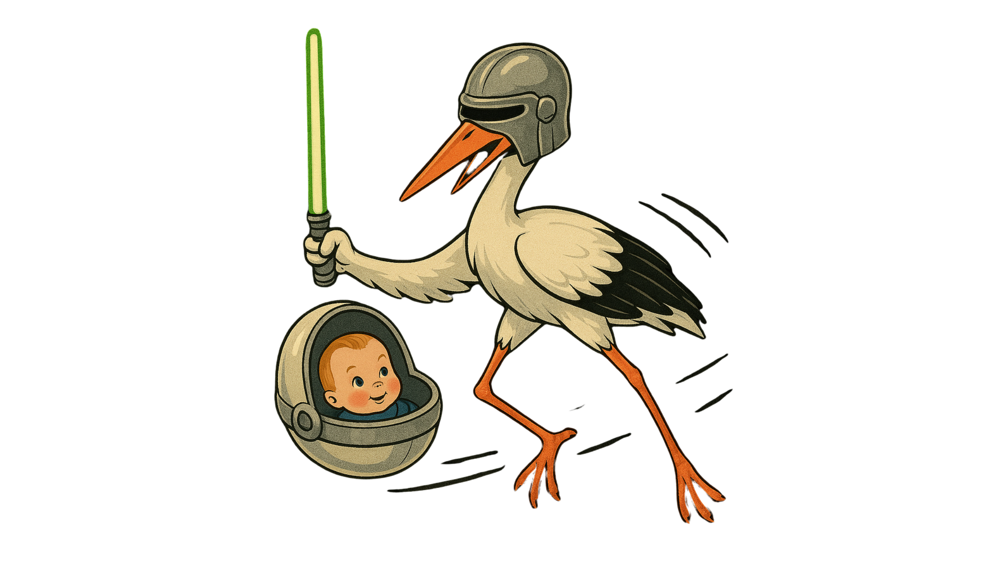

Star Wars Inspired Names: Top Picks for 2025
Star Wars isn't just an epic saga—it's a fantastic source of inspiration for baby names. Whether you're a die-hard fan or just looking for something unique, here are some great Star Wars-inspired names perfect for your little Jedi (or Sith) arriving in 2025.
Popular Star Wars Names for Girls

- Leia – Regal, strong, and timeless, Princess Leia symbolizes leadership and courage.
- Rey – Short, easy to pronounce, and symbolizes strength and independence.
- Jyn – Unique and memorable, inspired by the brave Jyn Erso.
- Padmé – Elegant and distinctive, associated with grace and diplomacy.
- Ahsoka – Bold choice with a strong and adventurous spirit.
Popular Star Wars Names for Boys

- Luke – Classic and accessible, embodying bravery and hope.
- Finn – Friendly and contemporary, representing resilience and loyalty.
- Ben – Simple yet powerful, honoring Ben Kenobi (Obi-Wan).
- Cassian – Stylish and sophisticated, perfect for adventurous spirits.
- Ezra – Catchy, short, and modern, ideal for those seeking an energetic name.
Gender-Neutral Star Wars Names

- Ash – Versatile, cool, and understated.
- Rian – Simple, contemporary, and works seamlessly for all genders.
- Sky – Inspired by the legendary Skywalker lineage, short and poetic.
Tips for Choosing a Star Wars Inspired Name
May the Name Be With You!
Choosing a name is a big step. Consider these points to find the perfect fit from a galaxy far, far away...
- Balance Fan Appeal and Practicality – Choose a name easy enough for everyday life. Not everyone will immediately recognize Bodhi Rook, but most know Luke.
- Consider Nicknames – Ensure the name has appealing, practical nickname options. Anakin might become Ani, Padmé could be Paddy. Are you happy with these?
- Test Pronunciation and Spelling – Opt for names easily understood and spelled correctly by others. Ahsoka might require more spelling out than Leia.
Whether drawn to the heroic, mysterious, or simply stylish names, Star Wars offers timeless options suitable for your 2025 baby. Choose wisely, young Padawan!